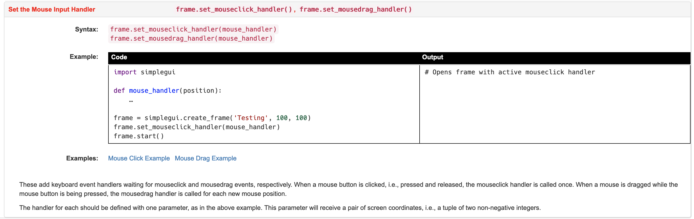
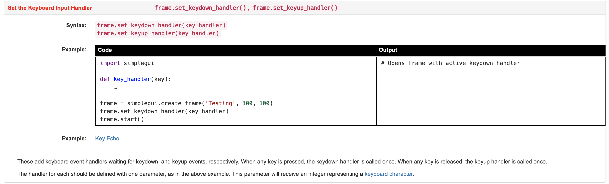

10.7. SimpleGUI Events¶
The SimpleGUI module has three user interface widgets/controls that respond to user events: buttons, text input boxes and the window frame. As we saw in the previous section, the button handler does not take any parameters. It is simply called when the button is clicked. And the text input handler takes one parameter, which is how it receives the string of text the user entered. The window frame can respond to mouse clicks and keypress events that happen on the canvas area. The four events that the system can listen for while the frame is active are: key up, key down, mouse click and mouse drag. The mouse events (and their handler functions) are only triggered if the clicks or drags are on the canvas. This section shows examples of how to register and write these event handlers.
10.7.1. Mouse Events¶
Let’s look at the documentation for the mouse events:
{kind=link}
This documentation shows us that to set up a mouse event handler, we need to call the set_mouseclick_handler() function or the set_mousedrag_handler() function on a frame object. For each of these, we just pass the name of the function we have defined to handle those events. If you look at the example shown, the function defined takes one parameter. You might be thinking that is weird because a mouse click happens in a two-dimensional window and so you need to specify an x and a y coordinate. But in SimpleGUI these coordinates are passed as a two-item tuple (remember tuples? the lists that can’t be modified?). So, if the mouse was clicked at 25 pixels to the right of the top-left corner and 100 pixels down from the top-left corner, the tuple [25,100] will be passed to the mouse click event handler.
Here is a code example:

The code above is similar to the examples we have seen already - a message is displayed on screen and can be changed if a user types a new message in the input box. But, it also draws a blue circle (outline only) on the canvas wherever the user last clicked. Note that there is one parameter in the mouse_click() function, called ‘pos’ and we print this out to the output console, but also assign it to the global variable ‘circ_pos’. That global variable is used in the draw() function to draw a circle.
10.7.2. Keyboard Events¶
Let’s now look at how SimpleGUI handles keyboard events, because it is also different than the way the Turtle module handled keyboard events. Here is the key event handler documentation:
{kind=link}
We see here that there are two different key handlers that can be registered on a frame object: set_keydown_handler() and set_keyup_handler(). For both of these you must specify the name of the function that will handle the event, and the function needs to take a single parameter, the key that is pressed down (or released).
If you click on the key echo example, it will show you the following code in CodeSkulptr, although we have added one extra statement:

On line 16, which is in the keydown handler, we added a print statement that prints the value of the key out to the output console. Run this code to see what it does. When you press down on a key on the keyboard, that key is displayed on the small canvas. This is because the key parameter is converted to a character and stored in the global variable current_key. That variable is used in the draw() function to display the letter. When you lift your finger off that key, the keyup() handler is called and the global variable is reset to the space key, and so the letter disappears from the canvas. If you add the same print statement on line 16 to print out the value of the key parameter and then look at the output frame on the right of your browser window, you will see various numbers appear as you type different letters. These numbers are the ASCII values of the letters. ASCII is a standard way of representing characters across many computer systems. Because the ASCII value is passed, we need to convert that to a character type using chr() so that we see the actual letter on the canvas.